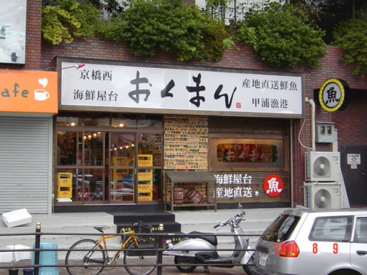
店舗看板
入口の上に、店の顔をつくる。
お店の入口の上や、ビルの壁面に付ける片面の看板です。つくり方が多く、店のイメージに合わせられます。
通りを歩く人が、最初に見るのが看板です。何の店か、どんな店かが、その一枚で伝わります。
セイコー工芸は、その顔をつくる会社です。看板の企画、製作、施工に加え、LED、テント、塗装、内装、電気工事まで対応しています。
以前は、他より目立つ派手な看板を望む声が多くありました。最近は、街に合うデザインを望まれることが増えています。時代のニーズに合わせ、その街に合う形でご提案します。
常に対応出来るサインで、
お客様のニーズにお答えします。
店舗の顔になる看板から、夜に光るサイン、テント、屋上の大型まで。写真は、現行公式サイトの施工写真集に掲載されているものです。お客様名や施工年は写真だけでは断定できないため、記載していません。

店舗看板
お店の入口の上や、ビルの壁面に付ける片面の看板です。つくり方が多く、店のイメージに合わせられます。
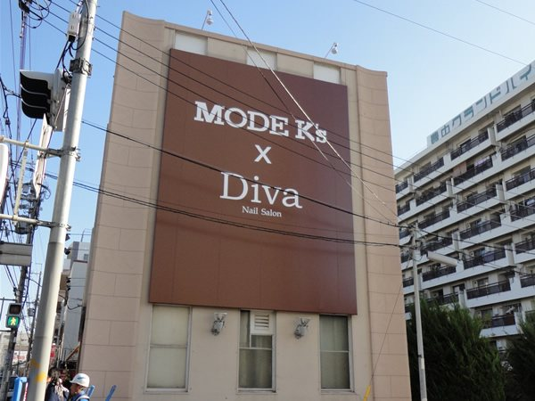
壁面看板
小さな一枚から、建物の一面を使う大きな看板まで。遠目にも店の存在が伝わる大きさでつくります。
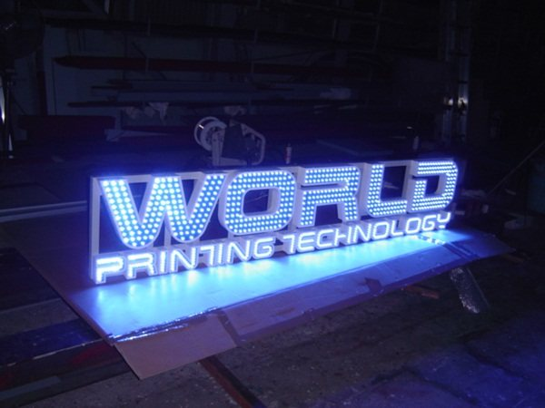
LEDサイン
チャンネル文字や内照式の看板にLEDを入れ、夜間に文字を見せるサインです。ネオンや蛍光灯に代わる、省エネの光です。
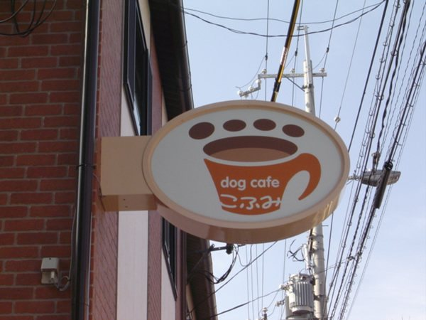
袖看板
壁やポールから突き出す看板です。離れた場所からも店の位置が分かり、ビルのテナントにも使われます。
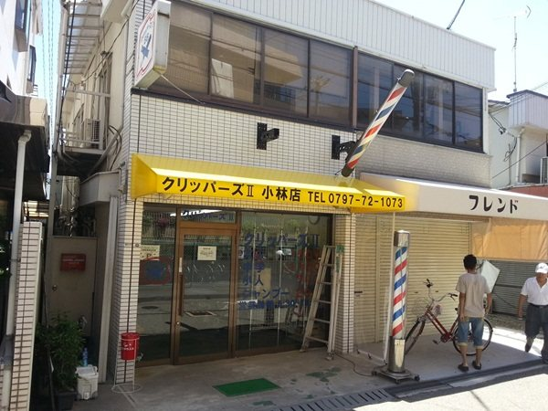
テント
日除け、雨除けだけではありません。店先のアクセントになるサインとして、小型から大型まで施工します。
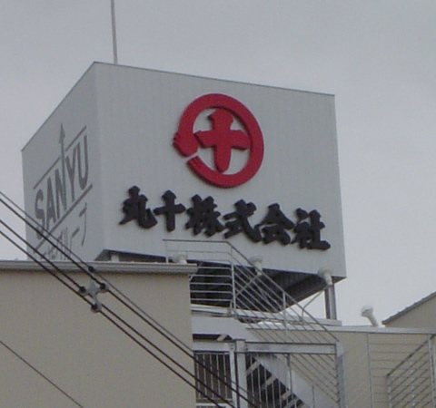
その他サイン ／ 屋上・塔屋
ビルの屋上、塔屋に付ける大型の看板です。ネオン管やLEDを使い、遠くからも目立つ形にできます。
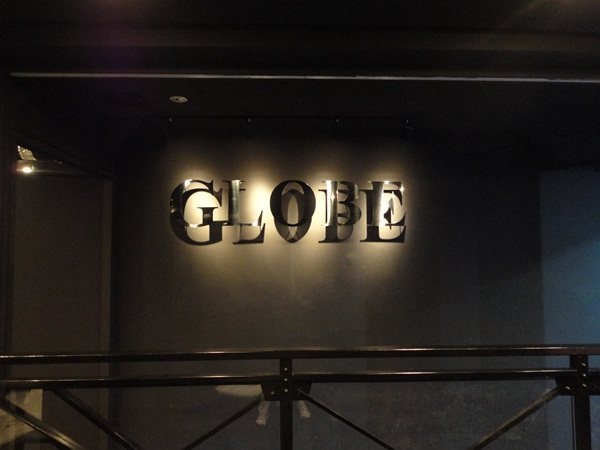
その他サイン ／ 立体文字
厚みのある金属文字やカルプ文字です。壁面、入口、塔屋まで、小さいものから大きいものまで使えます。
スタンド看板、自立看板、銘板、インクジェット、ウインドウサイン、カッティングシートも、現行サイトの施工写真集に掲載されています。このページでは、店舗の印象が伝わる写真を先に並べています。
主力はサインです。看板のまわりで必要になる工事も、同じ窓口でご相談いただけます。
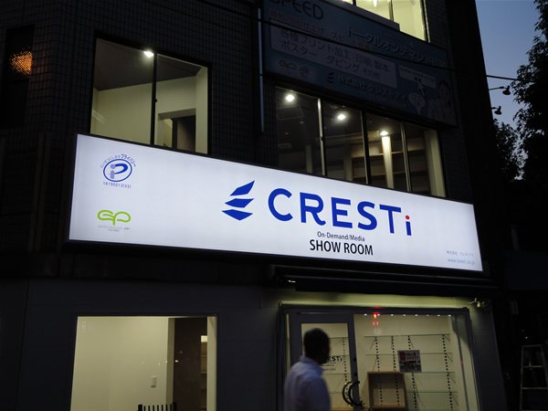
SIGN
企画から製作、現場への取付けまで。小さな看板も、建物に付く大きなサインも、店のイメージに合わせてつくります。
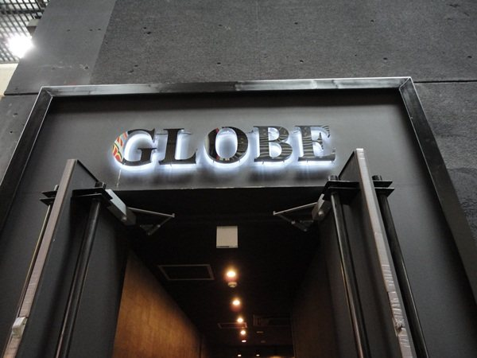
LED
チャンネル文字や内照式看板の内側にLEDを組み、夜も文字が見えるサインにします。
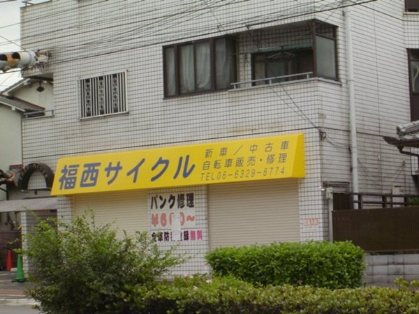
TENT
日よけ、雨よけに加えて、店の顔になるテントを施工します。小型から大型まで対応しています。
PAINT
看板とあわせて、塗装工事もお受けしています。
INTERIOR
店舗に関わる内装工事も、ご相談いただけます。
ELECTRIC
看板に関わる電気工事に対応しています。第二種電気工事士の資格を、社内で保有しています。
設置したあとの電球交換、看板面の交換、清掃、サビの処置、撤去も、現行サイトでご案内しています。塗装・内装の施工写真は現行サイトにないため、正式制作時に写真をご用意ください。
強み
1979年に成広工芸として看板の製作を始め、1982年に法人を設立。2001年には2代目が会社を継承しました。
長く看板を見てきた経験は、初めてつくるときも、古くなった看板を替えるときも、「いまの店に、何が合うか」を一緒に考える土台になります。
デザインの相談から、製作、現場への取付けまでを一社で進められます。営業が伺い、内容をご説明します。
製作と取付けで窓口が分かれません。相談から施工まで、セイコー工芸にまとめてお話しいただけます。
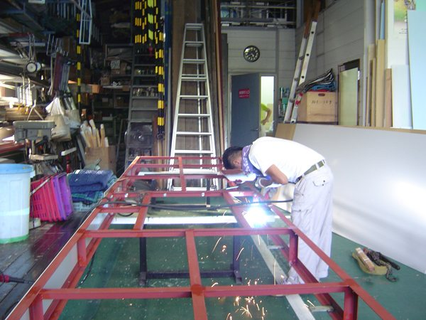
主力はサインです。そのうえで、テント、塗装、内装、電気工事にも対応しています。
看板のまわりで必要になる工事を、別の会社へ探し直さずに相談できます。
現行サイトの「発注から施工まで」に沿って、デモ用に5段階へ整理しています。実際の手順と違う場合は、正式制作時に直してください。
どんな場所に、どんな看板をつくりたいか。まずはお電話ください。経験のあるスタッフがアドバイスします。
ご希望を伺ったうえで、設置場所を確認します。立地や寸法を、現地で見ます。
プランと納期、お見積りをご連絡します。内容とお支払い条件をご確認いただいたうえで、ご発注となります。
デザインの校正のあと、使う素材に合った方法で製作します。
仕上がりをご確認いただいたうえで、完成・納品します。現場への取付けを含めた手順は、正式制作時に確認してください。
会社について
1979
成広工芸として、看板の製作を始める。
1982
8月、法人を設立する。
2001
2代目として、会社を継承する。
現在
大阪市東淀川区菅原で、製作から施工まで。
1979年の創業以来、看板製作を中心に事業を展開。お客様が求めるものに耳を傾け、看板の企画・製作・施工から、関連する工事まで対応してきました。これからも、一つひとつのご要望に向き合い、街の景色をつくる仕事に取り組んでいきます。
正式な会社案内として公開する前に、文章と年次は会社側でご確認ください。
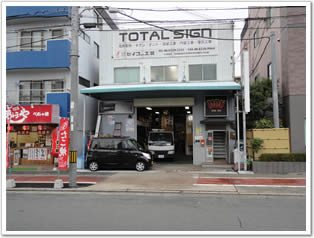
| 社名 | 有限会社セイコー工芸 |
|---|---|
| 代表取締役 | 鎌倉慶一 |
| 創業 | 1979年3月（成広工芸として看板製作を開始） |
| 法人設立 | 1982年8月 |
| 資本金 | 500万円 |
| 所在地 | 〒533-0022 大阪市東淀川区菅原3丁目4-24 |
| 電話番号 | 06-6329-2222 |
| FAX | 06-6326-9964 |
| 従業員数 | 5人 |
| 事業内容 | デザイン・企画・設計、各種看板の製作施工、看板の撤去・メンテナンス、テント工事、電気工事、塗装工事、内装工事、インクジェット、カッティングシート、立体文字、LEDサイン、幕類、ウインドウサイン、ガラスフィルム |
| 屋外広告業登録 |
|
| 保有資格 | 第二種電気工事士、高所作業車運転技能士、小型移動式クレーン運転技能士、玉掛け |
| 加盟団体 | 大阪屋外広告美術協同組合 |
会社概要の数値・登録番号・資格名は、現行公式サイトの掲載内容です。正式制作の前に、最新の内容をご確認ください。メールアドレスと営業時間は、現行サイトに記載がないため載せていません。